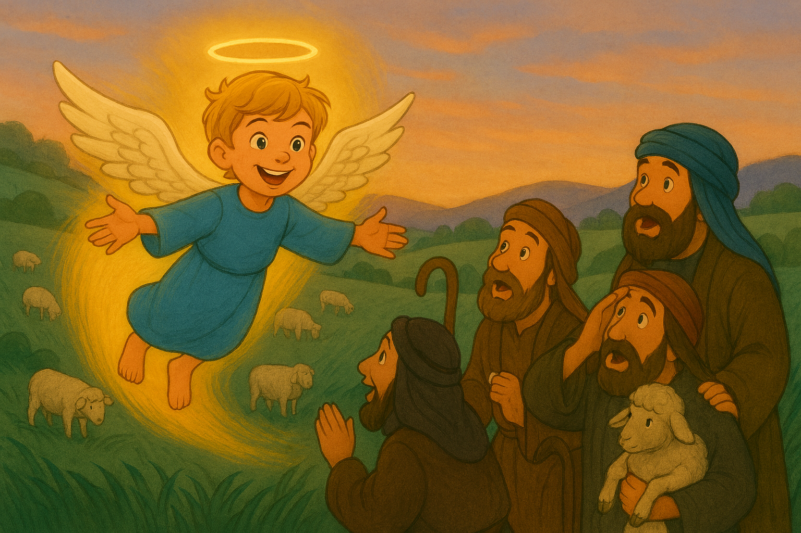
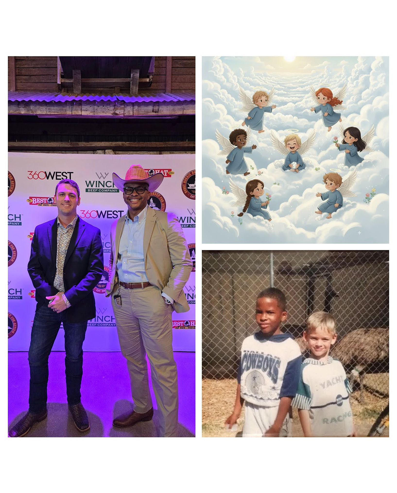

For Immediate Release
Best Friends of 33 Years Unite to Launch "Gabriel the Brave"—A Story Born from a Child’s Question
FORT WORTH, Texas – November 19, 2025

It started with a simple question from a child looking at a Christmas tree: "Why do we put an angel at the top?" That question sparked a passion project that has now blossomed into Gabriel the Brave: A Christmas Story, a new children's book by lifelong friends Carter Amon and Darryl Erby.
Available now on Amazon Kindle, Hardback, and Paperback, Gabriel the Brave is more than just a holiday tale; it is a testament to a friendship that began in the second grade. Carter Amon, a Marine Corps veteran, and Darryl Erby, a software sales executive, have been friends for over 33 years. They joined forces—combining Carter’s lyrical storytelling with Darryl’s innovative, AI-driven illustrations—to create a book that answers that child's question with heart and wonder.

"This story would never have happened if it wasn’t for my wife Sarah's idea and the curiosity of our sons," says author Carter Amon.
Producer Darryl Erby reflects on their shared history: "Carter and I loved spending Christmas together, playing with toys like all kids. Now as fathers, we want to share why we celebrate and share that love with others."
The book follows Gabriel, a small angel with big fears, as he finds his voice on the holiest of nights. It creates a bridge between ancient tradition and modern families.
Early reviews are glowing. Kidliomag writes:
“‘Gabriel the Brave: A Christmas Story’ is a beautifully crafted tale that whispers to your heart... Carter Amon’s words are like sweet honey... while Darryl’s illustrations are nothing short of breathtaking – they’re windows into the very soul of the nativity.”
Availability
Gabriel the Brave is available now on Amazon. Buy Now: https://a.co/d/fJPQjkx
About the Creators
Carter Amon (Author): A Marine Corps veteran with a bachelor's degree in business, Carter resides in the DFW Metroplex with his wife, Sarah, and their two boys. Gabriel the Brave is his first authored book.
Darryl Erby (Illustrator & Designer): A software sales executive with an MBA in Data Analytics, Darryl utilized a cutting-edge AI-driven approach to create the book's vibrant illustrations. He lives in the DFW area with his wife, Jessica, and their two sons.
Media Contact
Darryl Erby
Email: darrylerby@gabrielthebrave.com
Website: www.gabrielthebrave.com